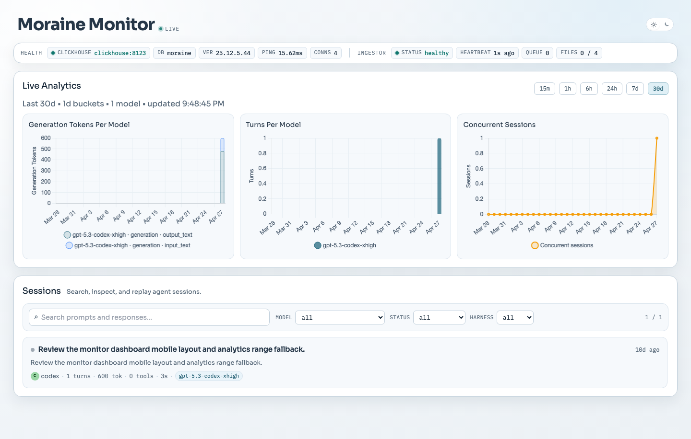

Long-term memory
for your coding agents.
Your agents forget everything between sessions, and their history is scattered across tools you can't search. Moraine indexes every Codex, Claude Code, Cursor, Kimi, Hermes and Pi session into a local ClickHouse trace stack and serves it over MCP — so agents can search everything they've ever done. Nothing leaves your machine.
uv tool install moraine-cli
the ridge of rock and sediment a glacier deposits as it moves and melts away.
Your agents are the glacier. Moraine is the record they leave behind.
One unified record of everything your agents did.
Conversation turns, tool calls, token counts and timestamps from every harness, in one consistent schema you can browse, query, and search.
For developers who run coding agents all day — across more than one tool.
Just ClickHouse underneath
Turns, tool calls, tokens and timing land in one schema. Query moraine.events with your own SQL, dashboards or notebooks — no lock-in.
Realtime ingest + backfill
Watches Codex, Claude Code, Cursor, Kimi, Hermes and Pi session files live, and indexes your entire existing history on first run.
Monitor UI
Browse sessions, inspect live analytics, and check ingest health at 127.0.0.1:8080 — token, turn and concurrency charts included.
MCP retrieval
Agents search prior decisions, fixes and errors over moraine run mcp — long-term memory exposed as standard MCP tools.
Cross-provider search
One BM25 query spans every harness at once. Find that decision, fix or error wherever it happened — Codex, Claude or Cursor alike.
Fully local by default
Runtime state lives under ~/.moraine. Nothing leaves your machine unless you point Moraine at remote infrastructure.
From scattered session files to one searchable history.
Six harnesses. One trace stack.
Moraine ships ingestion adapters for the agent tools you already use — every source runs live and backfills on first start, enabled by default.
Give every agent recall of every session.
Add a few lines to your harness instructions and your agents stop asking you what already happened. They search the record themselves — across providers, in realtime.
list_sessionsEnumerate recent and active sessions, any harness.search_sessionsBM25 keyword search over the full trace history.openPull a specific session's turns, tools and context.
Watch your whole agent fleet, live.
Generation tokens per model, turns per model, concurrent sessions, and a searchable session list — updating in realtime at 127.0.0.1:8080.

Install and run in three commands.
Stand up your local trace stack, then point your agents at their own memory.
Then add the search guidance to your harness — your agents do the rest.